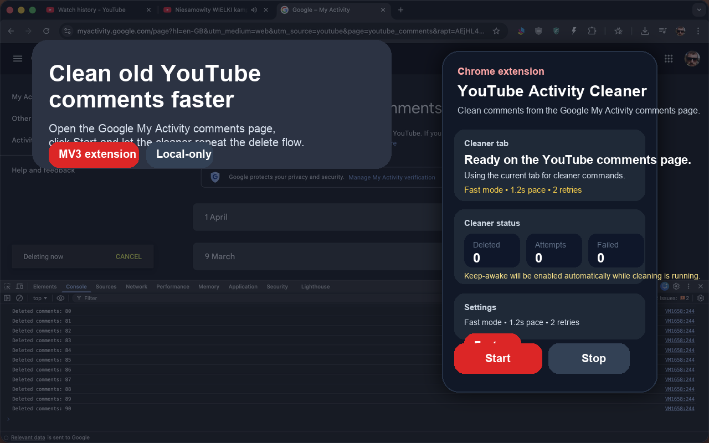

Chrome Extension
YouTube Activity Cleaner
Clean old YouTube comments from the Google My Activity comments page with a focused, local-first MV3 extension.

Key Features
Fast or Safe mode. Choose a more aggressive run profile or a more conservative one before starting.
Retry and backoff. The cleaner retries failed delete flows with clear status messages and failure protection.
Local settings. Pacing and retry preferences are saved locally in Chrome and reused on the next run.
No cloud backend. The extension uses browser permissions only for tabs, power keep-awake, and local storage.
How To Use
- Load the unpacked extension from the
extension/directory or install it from the Chrome Web Store later. - Open the Google My Activity page for Your YouTube comments.
- Open the popup, review the settings, and click Start.
- Keep the Google My Activity tab visible while the cleaner is working.
- Use the popup to monitor progress or click Stop.
The current beta is best tested with the Google My Activity interface in English and Polish.
Current Status
- The core cleaner flow, popup controls, saved settings, and keep-awake support are implemented in the current v2 build.
- Current localization coverage is focused on the English and Polish Google My Activity interface.
- The remaining release work is mainly manual smoke testing, final real screenshots, and store publication setup.